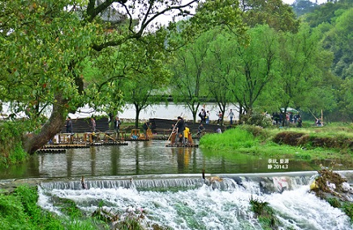
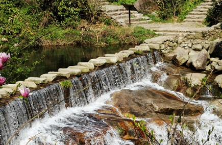

morly旅游网
提到婺源，首先映入大家脑海的肯定就是油菜花啦!每年三、四月份都有大量游客涌入这里，只为一睹那漫山遍野黄灿灿的花田。但是如果你以为婺源只有春天的油菜花的话，那你大概是要错过更美的秋景了，石城的红叶、晓起的皇菊、篁岭的晒秋...这里的秋色比春光美的更加灿烂!婺源的景色是远比想象中要美的，来婺源旅游最好的时间自然是在三、四月份了，因为这个时候有油菜花，不过错了三四月份在秋季去婺源也不错，在秋季的时候可以体验一下婺源的晒秋。
冬天的婺源非常适合周围城市人逃离喧嚣放松自己的地方。虽没有三四月油菜花时的人山人海，也没有十一二月红枫时的万众瞩目，但冷清中回归婺源本身，不管是寥寥升起的炊烟，还是本地人用方言的寒暄，无不透露出一丝丝温馨。
地理位置
婺源位于江西东北部（上饶也有赣东北这个说法），与皖、浙两省交界。婺源东邻国家历史文化名城衢州市，西毗瓷都景德镇市，北枕国家级旅游胜地黄山市和古徽州府、国家历史文化名城歙县，南接江南第一仙山三清山和铜都德兴市。
景区推荐
篁岭
挂在山崖上的篁岭古村，属典型山居村落，是婺源东线的景区之一，距离婺源县城39公里。 篁岭是婺源旅游的浓缩，集古村落、古树群、梯田花海、民俗晒秋为一体的最美乡村景致。篁岭旅游不受季节影响，春观油菜花海、夏戏峡谷溯溪、秋赏古村晒秋、冬品民俗度假。在篁岭，与“晒秋”同样摄人心魂的是水墨梯田。篁岭的十大看点：晒秋人家、天街古巷、五桂香堂、奇异怪屋、冒险森林、极速溜索、红豆杉群、垒心栈桥、梯田花海、爱在心田。
【交通】乘坐婺源县城到篁岭的巴士，每天5班左右，票价约10元。
乘坐到江湾镇的班车(07:00-17:00)，每20分钟一班，然后在江湾镇换乘面包车或三轮车到景区 。
景区内交通可乘坐观光车和索道 。
【门票】
大门票（包括索道、观光车）:140人民币 (1月1日-12月31日 周一-周日)
【开放时间】
07:00-17:30 (1月1日-12月31日 周一-周日)

李坑
李坑是个四面环山的水乡小村，古建筑保存完好，布局极有特色。 村外两条山溪在村中汇合为一条小河，溪河两岸均傍水建有徽派民居，村前是大片的油菜花田，入春后满山遍野的金黄。 村里还保存着南宋武状元李知诚的故居。沿着村后的小路上山，能俯瞰李坑全景。 村内有拱桥、栈亭、寺庙和庭院，入村后，沿街店铺林立，主要出售这里特产的徽派木雕和龙尾砚，还有众多“农家乐”可住宿、吃饭。
【交通】在婺源长途汽车站乘婺源至东线的晓容、大坂、港口的汽车，中途下车后步行1公里可达
【门票】
免费:景区自从17年11月开始免费，但有当地人在收取门票，60元/人。
【开放时间】
07:00-17:30 (1月1日-12月31日 周一-周日)

大鄣山卧龙谷
卧龙谷景区四季变换着不同的色彩。春季山花烂漫、夏季碧泉淙淙、秋季红枫尽染、冬季冰雕玉砌；高山峡谷里更是瀑布成群，彩池连环、相映交辉。紫色的山，绿色的树，白色的瀑布，彩色的深潭构成一幅天然泼墨山水画。
【交通】1.可从县城汽车北站乘坐县城至卧龙谷景区的直达班车（8:00左右和13:00左右，发车时间会根据季节有变化，最好提前到车站咨询，此时间仅供参考），大概15:00左右有车从景区返回婺源
2.可以在北站先乘坐至清华的班车到清华，再换乘出租车或摩的到达景区。而且返回县城的车次也比较多，从6:30-17:40，每20分钟就有一趟返回县城
【门票】
单独购票60元；通票210元包含此景点门票，通票5天有效（含江岭、晓起、江湾、汪口、李坑、卧龙谷、灵岩洞、思溪延村、彩虹桥、严田古樟园、文公山、鸳鸯湖、百柱宗祠、石城景点门票）1.2米以下的儿童可免票
【开放时间】
周一至周日 7:00-17:30

旅游路线
【三天游线路】
Day1婺源汽车北站(老站)(10分钟) → 月亮湾(30分钟) → 李坑(2小时) → 江岭(2小时) → 庆源村(1小时)Day2庆源村(1小时) → 晓起(3小时) → 汪口(2小时) → 婺源县城(30分钟)
Day3婺源汽车北站(老站)(10分钟) → 思溪延村(2小时) → 彩虹桥(2小时) → 婺源博物馆(1小时)
【五天游线路】
Day1婺源县城(10分钟) → 文公山(2小时) → 鸳鸯湖(2小时) → 婺源博物馆(1小时)Day2婺源汽车北站(老站)(10分钟) → 月亮湾(30分钟) → 李坑(2小时) → 汪口(2小时) → 江湾村(1小时) → 篁岭(2小时)
Day3晓起(3小时) → 江岭(2小时) → 庆源村(2小时)
Day4婺源汽车北站(老站)(10分钟) → 思溪延村(2小时) → 彩虹桥(2小时) → 清华镇(1小时)
Day5清华镇(10分钟) → 洪村(2小时) → 大鄣山(3小时) → 理坑(2小时) → 婺源县城(1小时)
内容整理至网络，如有侵权，请联系我们！1255394075@qq.com